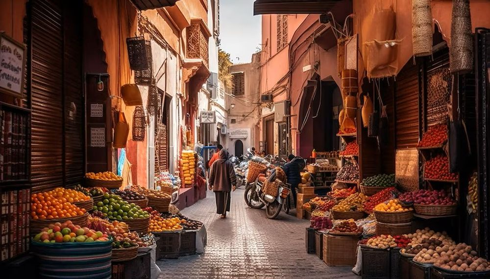

Descoperă Sicilia - O bijuterie insulară în Italia
Sicilia este o insulă pitorească în Italia, cu o combinație bogată de istorie, cultură și peisaje naturale:
-

Muntele Etna - Vulcanic și măreț
Cel mai înalt vulcan activ din Europa, oferind peisaje spectaculoase și aventuri în aer liber.
-

Palermo - Capitală vibrantă
Orașul oferă catedrale impunătoare, piețe tradiționale și experiențe culinare autentice.
-

Taormina - Bijuterie pe coastă
Un sat pitoresc de coastă cu teatru antic și vedere panoramica la Muntele Etna.
-

Valea templelor - Mărturii antice
Un sit arheologic impresionant cu temple și ruine din perioada greco-romană.
-

Insulele Eoliene - Paradis insular
O colecție de insule vulcanice cu plaje frumoase, peisaje spectaculoase și atmosferă relaxantă.
Concluzii
Sicilia îmbină elementele tradiționale și natura remarcabilă pentru o experiență de neuitat în Italia.